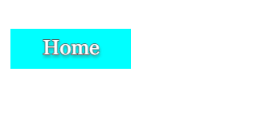

|  |  |
 |
 |
|
My Final Project
This is my final for CSC 106 created with my partner Venthai Mao. We decided to go with football because the world was hapenning at the same time. Who doenst like the world. Well this is how it came out. 1v1 play with a friend, one uses WSAD fro controls, another person uses the mouse. Have fun!!!!